Track 1: Research Papers
Form the core of the program and present methodological advances and empirical evaluations. The main content of the paper should be no longer than 9 pages.
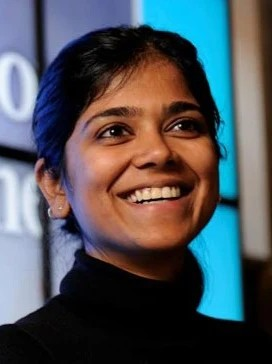
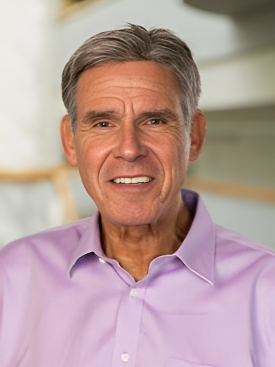
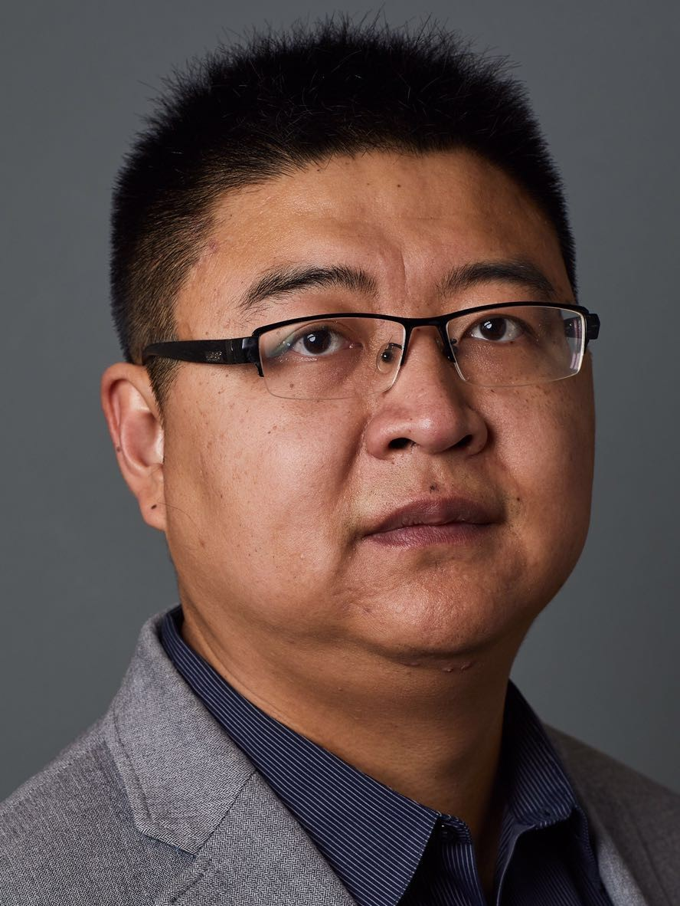
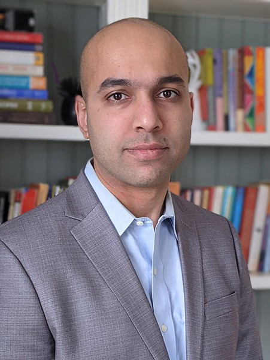


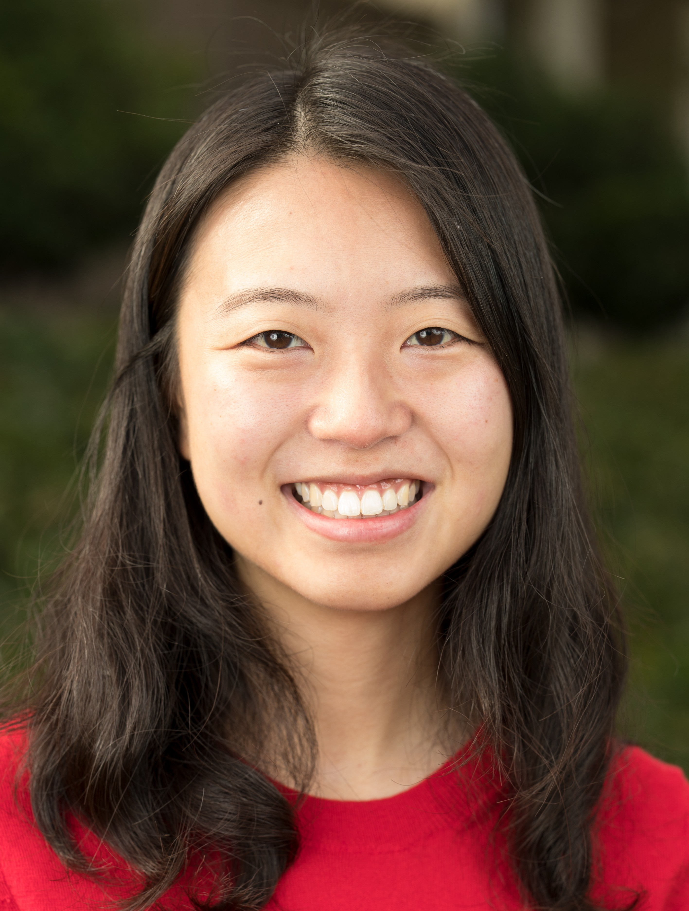
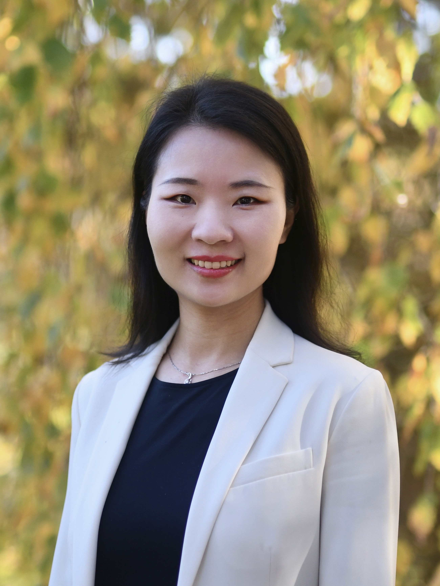
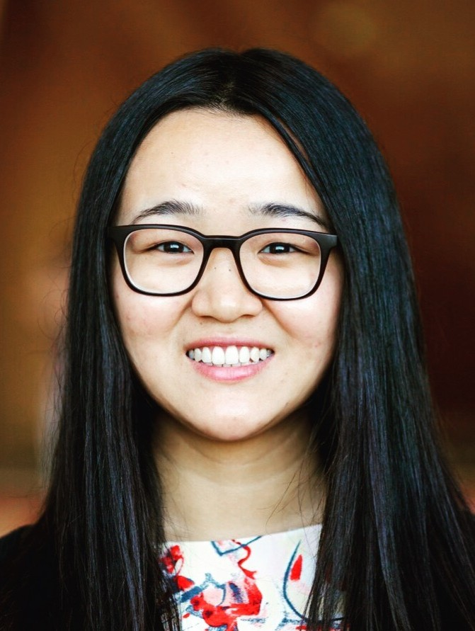
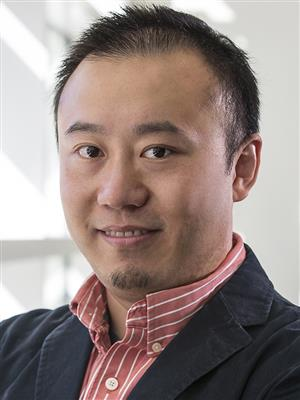


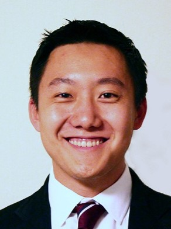

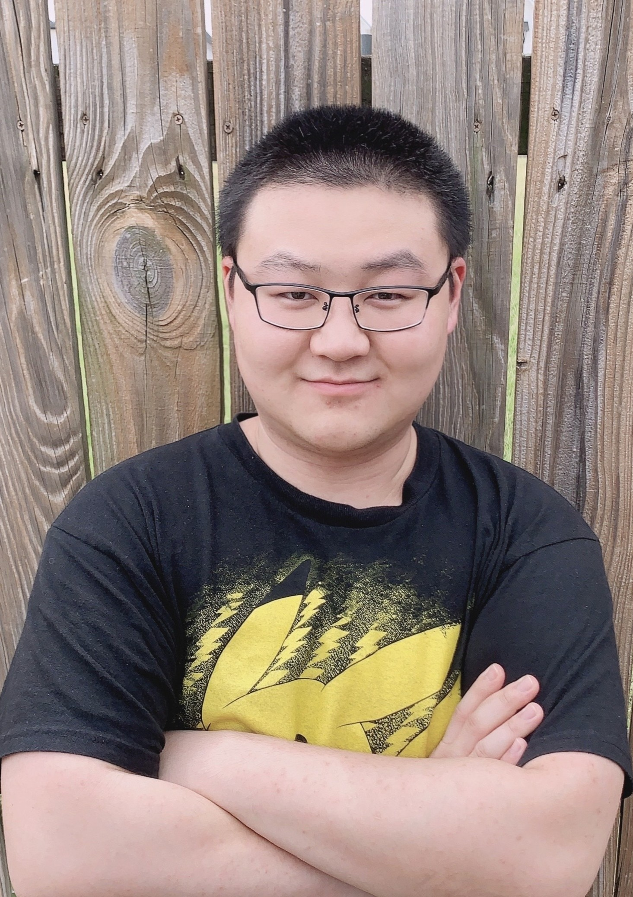
December 6, 2025 @ Upper Level Room 33ABC, San Diego Convention Center. See the workshop agenda on NeurIPS official site.
Following the successful first GenAI4Health workshop at NeurIPS 2024 (https://genai4health.github.io/2024-NeurIPS/), generative AI in healthcare has rapidly evolved from exploratory studies to real-world deployments. With increasing FDA involvement and expanding global regulatory frameworks, the second GenAI4Health workshop aims to bring together AI4Health practitioners, safety researchers, and policy experts to address critical challenges in developing robust and policy-compliant GenAI technologies for health. Submit papers by Sep 5, 2025.
Upper Level Room 33ABC, San Diego Convention Center, California, USA. December 6, 2025.
For the second GenAI4Health workshop at NeurIPS 2025, we invite submissions of original, unpublished work related to the use of Generative AI in healthcare.
\usepackage[dblblindworkshop,final]{neurips_2025}.\workshoptitle{The Second Workshop on GenAI for Health: Potential, Trust, and Policy Compliance}.| Sep 5, 2025 | Paper Submission Deadline |
| Sep 22, 2025 | Acceptance Notification |
| Oct 31, 2025 | Camera-ready Submission |
| Dec 6, 2025 | Workshop Day |
All deadlines are at 11:59 PM AoE (Anywhere on Earth). Submit your paper via the OpenReview Submission Portal.
Submissions within each track can fall into any of the above three topic areas. We provide three tracks for submissions:
Form the core of the program and present methodological advances and empirical evaluations. The main content of the paper should be no longer than 9 pages.
Showcasing working systems or applications. Present practical implementations and real-world applications. The main content of the paper should be no longer than 5 pages. The paper title should start with 'Demo:'.
Offering perspectives or proposals on policy, governance, or deployment strategies. See NeurIPS 2025 Call for Position Papers to understand what position papers are. Deadline: Sep 5, 2025 (NOT the main NeurIPS deadline). The main content of the paper should be no longer than 5 pages. The paper title should start with 'Position:'.
\usepackage{neurips_2025} without options to ensure the submission is anonymous.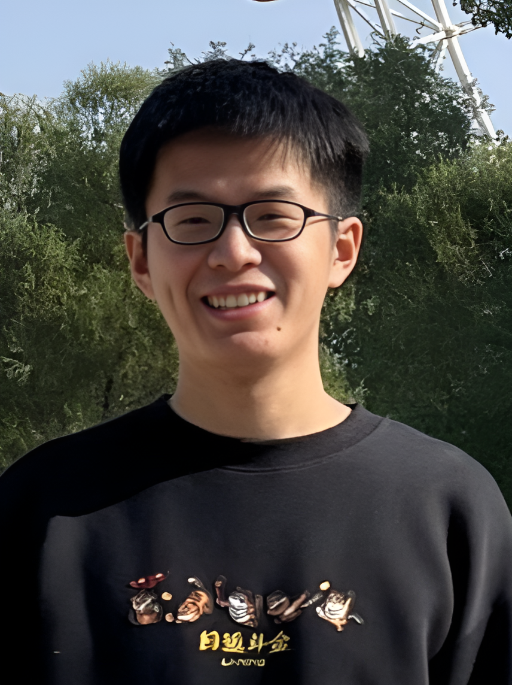
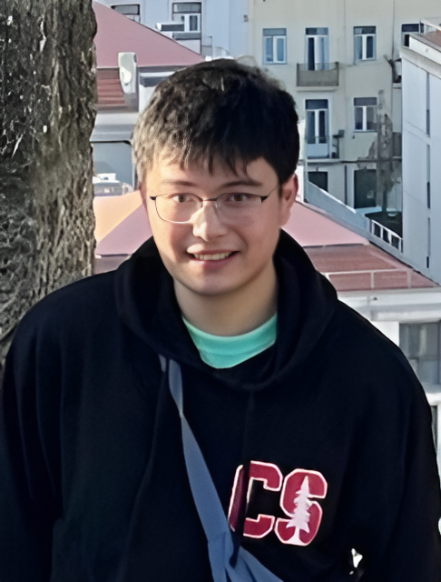
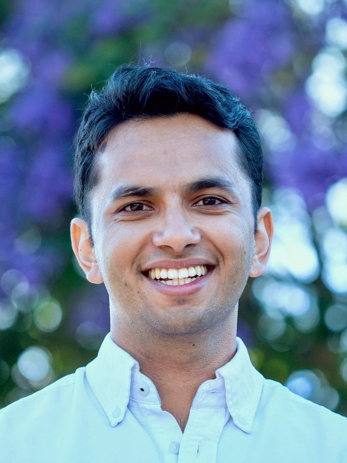
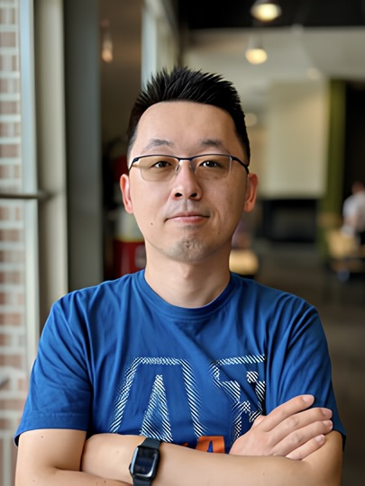
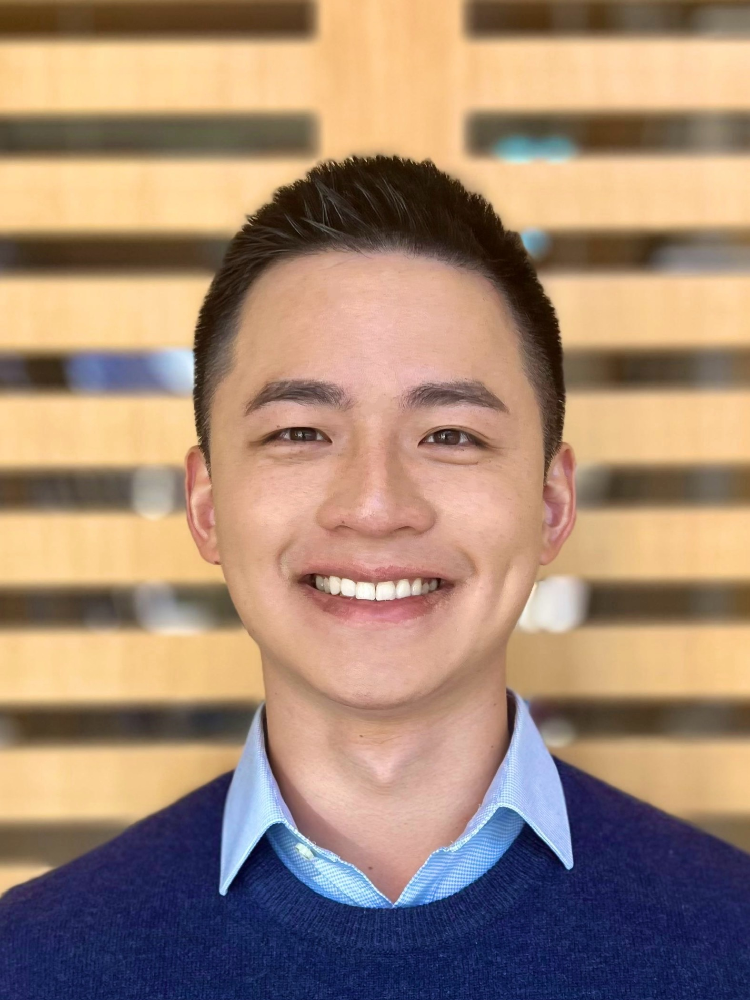

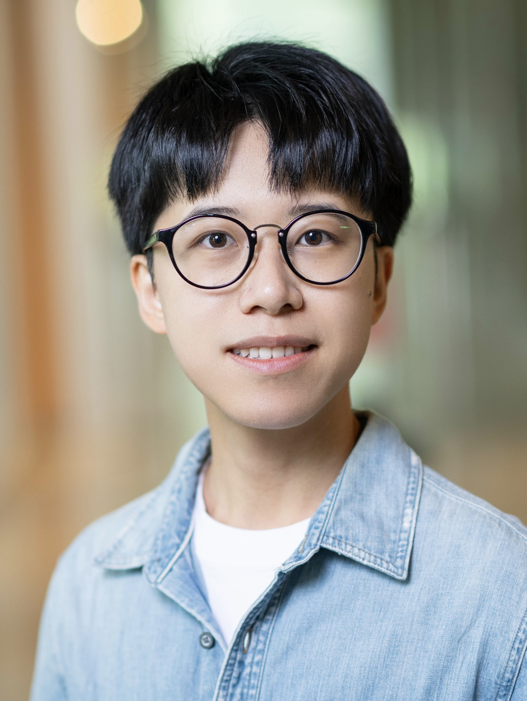
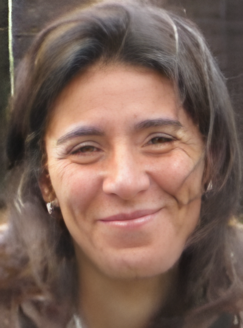
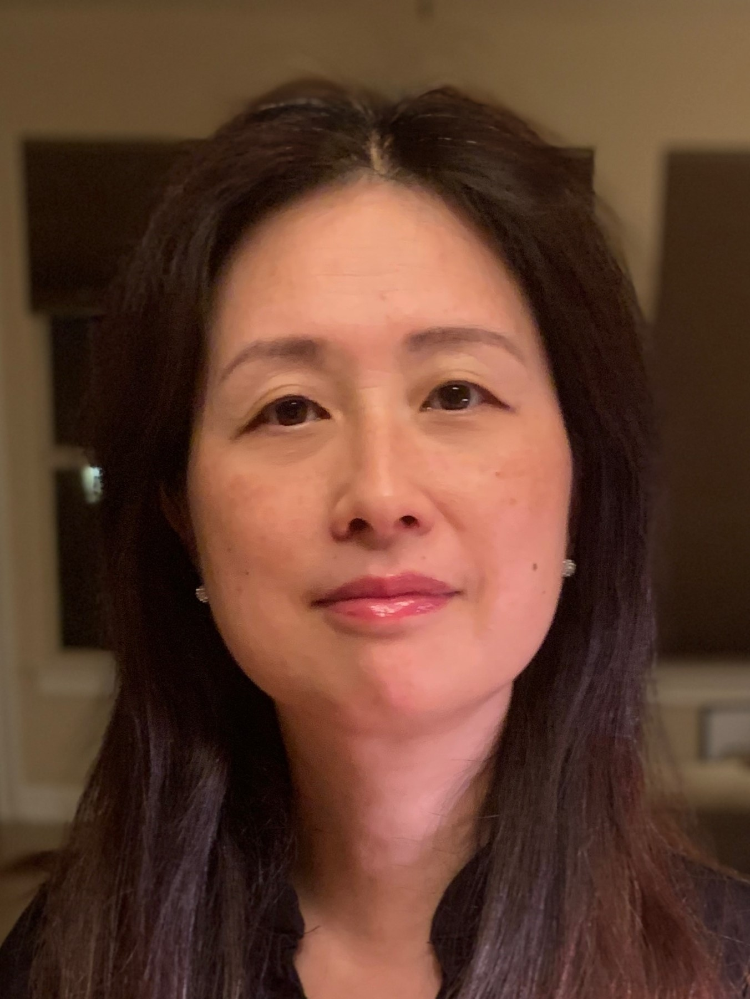